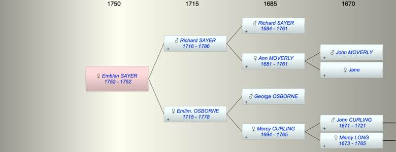

| [Index] |
| Emblen SAYER (1752 - 1752) |
|  |
| b. 1752 at St Laurence |
| d. 1752 at St Laurence aged 0 |
| Parents: |
| Richard SAYER (1716 - 1786) |
| Emlim. Emblem OSBORNE (1715 - 1778) |
| Siblings (3): |
| Richard SAYER (1748 - 1749) |
| George Osborn SAYER (1751 - ) |
| Richard SAYER (1759 - 1833) |
| Events in Emblen SAYER (1752 - 1752)'s life | |||||
| Date | Age | Event | Place | Notes | Src |
| 1752 | Emblen SAYER was born | St Laurence | Note 1 | ||
| 1752 | Emblen SAYER died | St Laurence | |||
| Note 1: bap 30 Nov 1752 at St Laurence ex FS |
| Personal Notes: |
|
There is some confusion as there is a burial 30 Nov 1752 at St Laurence ex FMP PR ie the day she was baptised but there is also a MI
233. Emblen, wife of Richard SAYER, died 27th February 1778 aged 62 years. Also Emblen, their daughter, died 25th January 1771 aged 19 years. *Also Richard, son of above, died in infancy. Also the above Richard Sayer died 6th December 1786 aged 71 years. *Also 4 grandchildren, viz: Ann aged 4 years, Ann, Stead, and George Joshua died in infancy. |
| Created on a Mac™ using iFamily for Mac™ on 8 Oct 2023 |